TARYNN LEE / SELECTED WORK / 2026
Tarynn
Lee.
我喜歡觀察、記錄，也喜歡重新組合畫面。這裡收錄我的照片、影片、拼貼與仍在發展的想法。
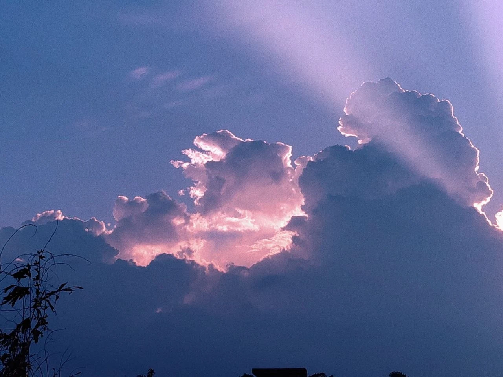
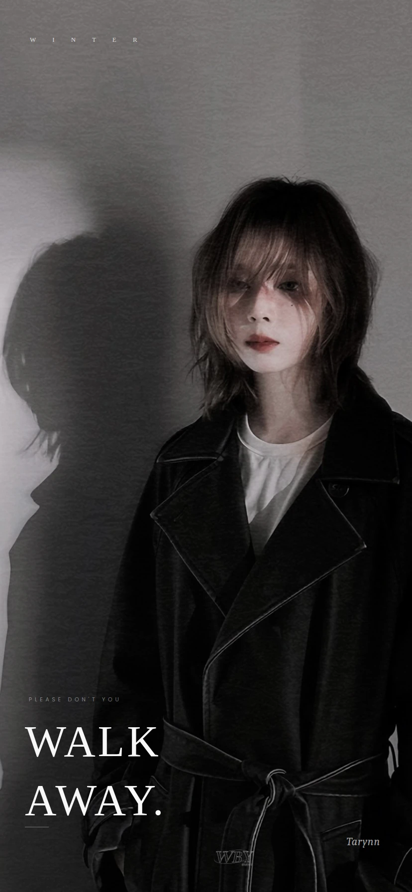
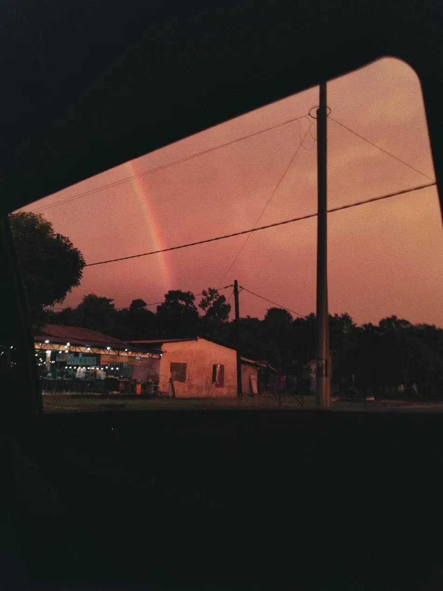
01
用照片觀察
從天空、自然到建築與人物，記錄讓我停下來的畫面。
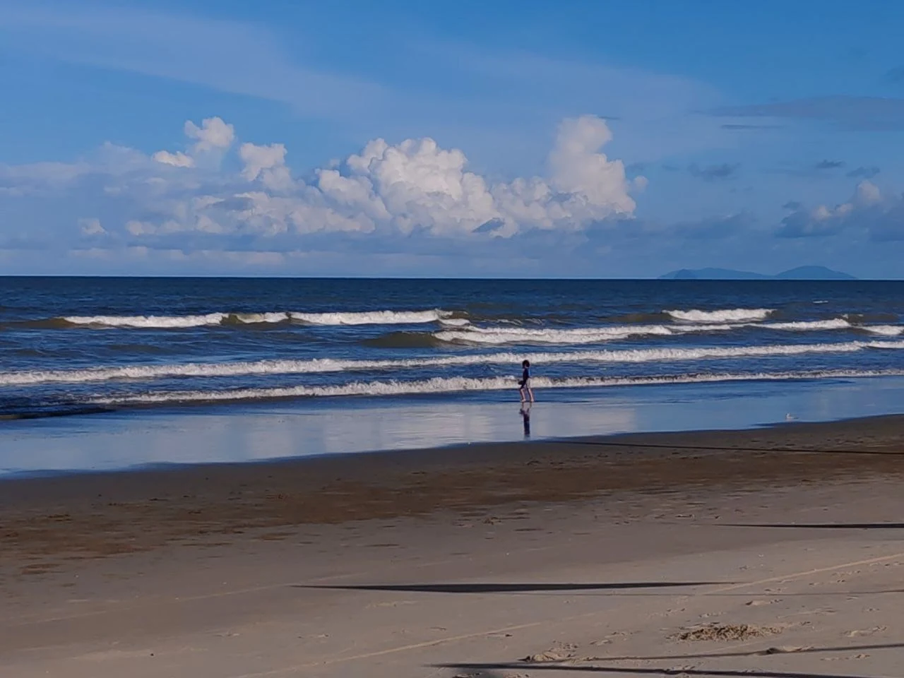
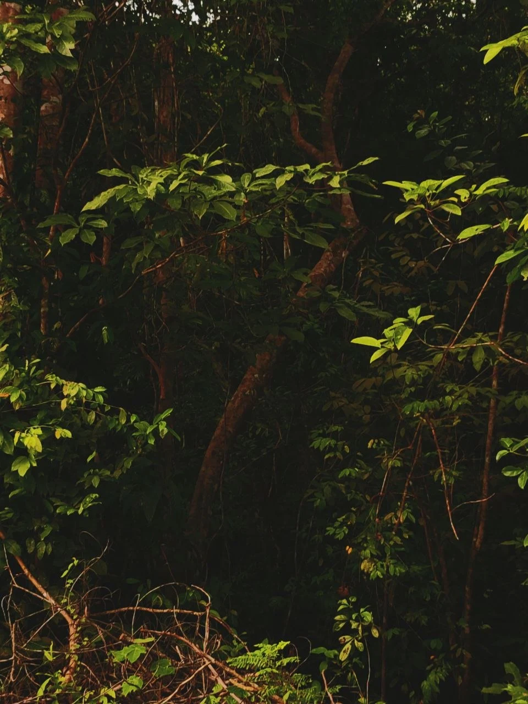
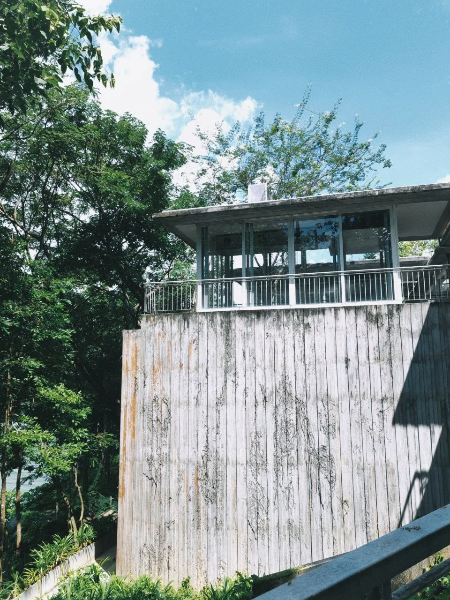

02
把旅程剪成片段
以多畫面編排，連起途中遇見的環境與人。
看見風景，也看見生活。
城市、樹林、海岸與人物在同一段旅程裡交替出現。這是我對旅行影像編排的一次練習。
03
音樂與人物
從喜愛的舞台影像出發，練習鏡頭選擇與文字編排。
舞台上的片刻
遠景、近景與不同光線，構成一支以人物為中心的偶像剪輯。
04
拼貼、留白與文字
以偶像影像為素材的個人視覺創作，從黑白桌布到彩色拼貼。
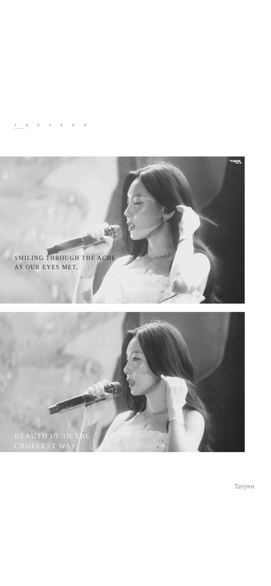
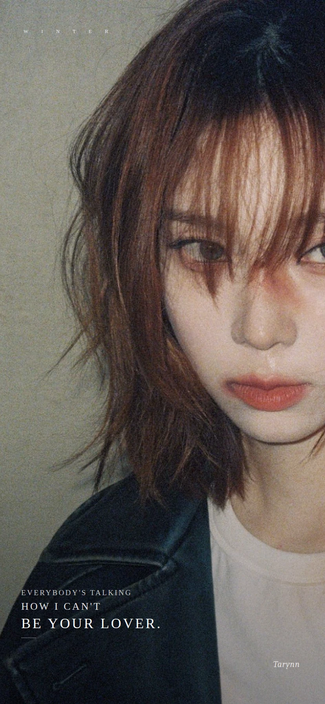
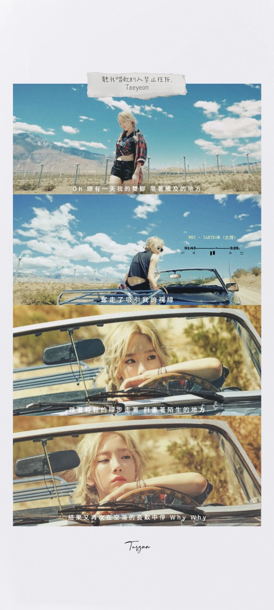
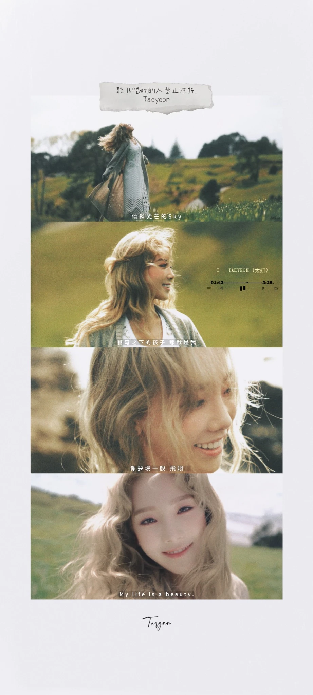
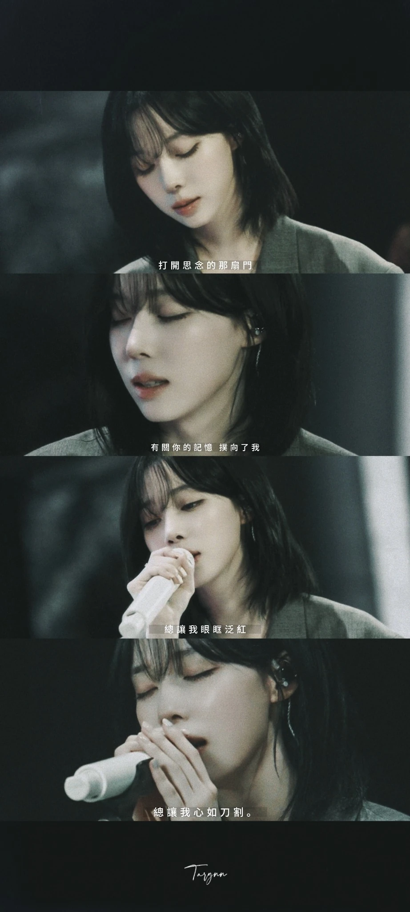
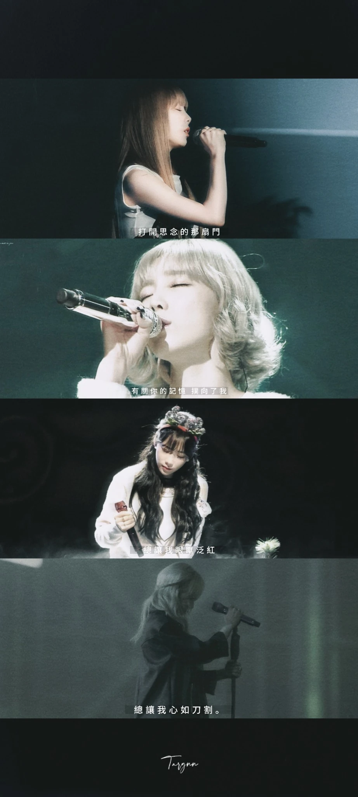
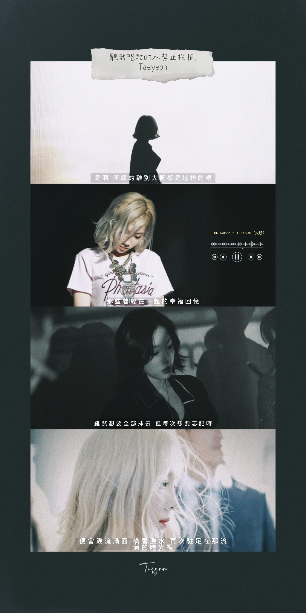
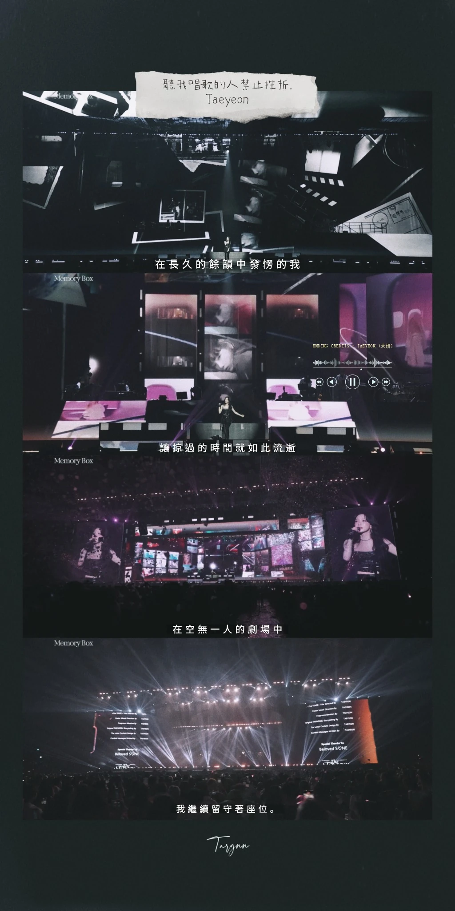
05
接下來想做的事
概念提案 · 尚未拍攝
空間裡的故事
我想用影片探索傳統木屋與現代建築：從光線和材料開始，再走進空間與人的日常。
01
光
用晨光、影子或窗邊開始。
02
材料
靠近木紋、牆面與構造細節。
03
空間
透過行走與視線，連起室內外。
04
人物
讓使用空間的人帶出故事。
關於我
我是 Tarynn Lee，來自馬來西亞。喜歡攝影、音樂、視覺排版，以及把生活裡的小片段變成作品。
我正在累積拍攝、剪輯與敘事經驗，也願意嘗試不同題材。這個作品集記錄的是我的興趣、練習與想法。
Instagram / x.y.239